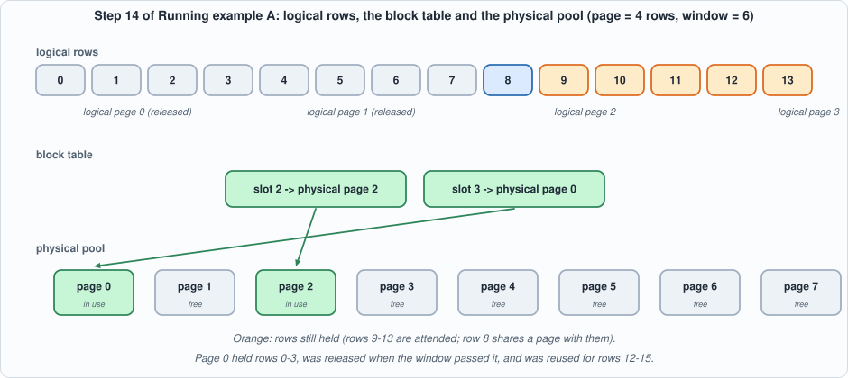
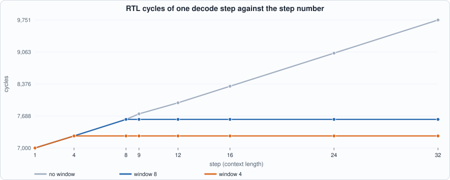
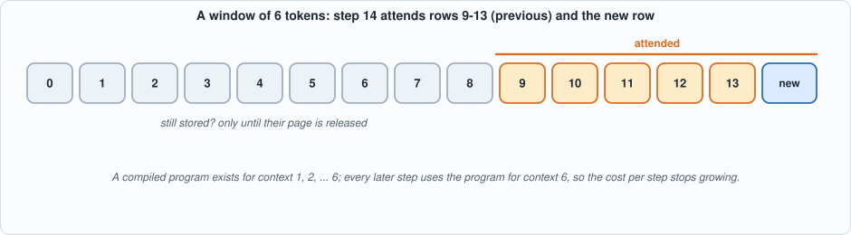
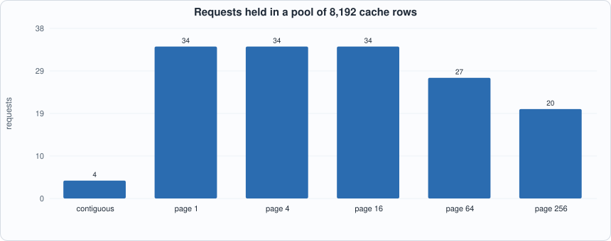
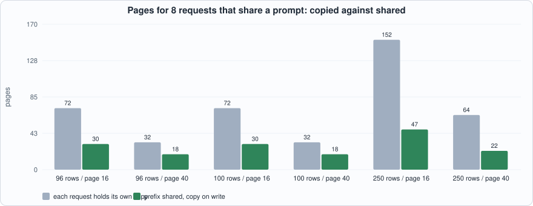
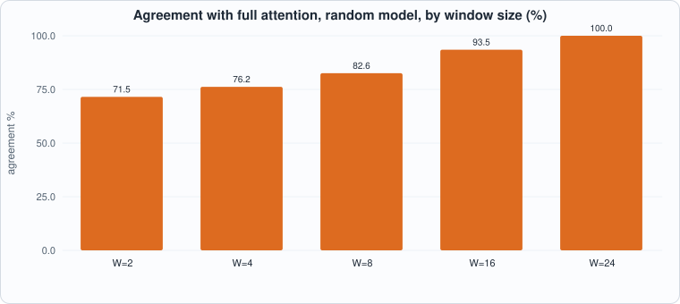
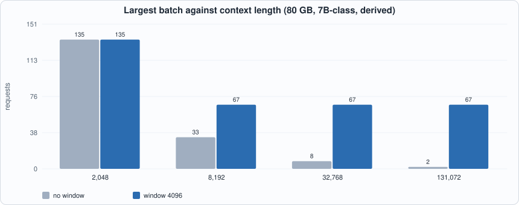

15. A Paged KV Cache and Sliding-Window Attention¶
About the animals in this picture and where they are standing
- West Caucasian tur (Capra caucasica) lives only in the western Caucasus, on steep slopes above the forest line. Its horns are short and heavy, curving outward and back, and it moves up and down cliffs with ease.
- Alpine ibex (Capra ibex) lives in the European Alps, usually above the tree line on steep rock, and is a famously sure-footed climber. Males carry horns that can reach about a metre. Hunting left only a small remnant, around the Gran Paradiso in Italy, by the early 1800s; reintroductions have since restored it across the Alps.
- Iberian ibex (Capra pyrenaica) lives in the mountains of Spain and Portugal. Its Pyrenean subspecies, the bucardo, died out in 2000. In 2003 scientists cloned one; the kid lived only minutes, making it the first extinct animal to be cloned.
- Siberian ibex (Capra sibirica) lives in the high mountains of Central Asia, from the Altai and Tian Shan to the Himalaya. It is one of the largest ibexes, and the males' ridged horns can exceed a metre in length.
The scene is imaginary: it is set on Titan, Saturn's largest moon: a thick orange haze, and lakes of liquid methane and ethane on its surface. The animals are stylised drawings, shown where they could not live, for effect.
What you will see: two ideas that decide how many requests a serving system can hold. A paged cache stores each request's keys and values in fixed-size pages taken from a shared pool, with a per-request block table, so memory is claimed as a request grows instead of reserved for its longest possible length; pages can be shared between requests (a common prompt) and are copied before a shared page is written. A sliding window limits attention to the last W tokens, so a request's cache stops growing and a decode step stops getting slower. The tiny model of Chapter 12 decodes 32 tokens with no window, a window of 8 and a window of 4, in both simulators; the page table is tested against a shadow model under 2,400 random operations; eighteen mutants are run against the tests.
What you need to know first: Chapter 8 (the KV cache), Chapter 9 (capacity and bandwidth), Chapter 11 (the compiler) and Chapter 12 (the host loop). Chapter 14 is not required, but it explains why caches are the thing worth saving.
What this chapter builds: model/paged_lm.py (the page table, the windowed reference and the paged host), model/paged_tests.py, tools/ch15_run.py, tools/mut_ch15.py, and the running examples tools/ch15_example_a.py and tools/ch15_example_b.py. No hardware and no compiler change: the chip never sees a page. The host gathers the rows a window needs into the same contiguous kc/vc inputs as before.
The problem: reserving for the longest request¶
A serving system does not know how long a request will run: a chat may stop after 30 tokens or go on to 3,000. A cache that must be one contiguous block per request forces a choice at the start: reserve for the longest allowed length (and waste most of it), or reserve too little and move the request later. Operating systems solved the same problem for program memory decades ago with virtual memory: split memory into fixed-size pages, give each program a table that maps its logical pages to whatever physical pages are free, and take a page only when the program reaches it. The paged KV cache (the idea behind vLLM's PagedAttention) is that, applied to the cache.
- Block table. For each request, a list: logical page
iis stored in physical pagetable[i]. - Free list. Physical pages nobody owns.
- Reference counts. A physical page may be in several block tables (a shared prompt); it is freed when its last owner lets go.
- Copy-on-write. If a request needs to write into a page that others also hold, it first copies the page and writes into its own copy.
The sliding window adds a second saving. If attention only ever looks at the last W tokens, then rows older than that will never be read again: their pages can be released, and the request's footprint is bounded by ceil((W-1)/P) + 1 pages, however long it runs.

Figure 15.1: logical rows, a block table and the physical pool. The two released logical pages leave a hole at the front of the table; physical page 0 was freed and reused.The model¶
#!/usr/bin/env python3
"""Chapter 15: a paged KV cache and sliding-window attention for the tiny language model of Chapter 12.
THE PAGE TABLE (host side). The cache is stored in fixed-size PAGES of `page` rows (one row = the key and value of one token). A request owns a BLOCK TABLE: the list of physical pages that hold its rows, in order. Pages come from a shared pool, so requests of different lengths share memory without a contiguous reservation per request. Pages can be SHARED between requests (a common prefix) with a reference count, and are copied before a shared page is written (copy-on-write). Pages that fall entirely outside the attention window are given back.
THE CHIP is oblivious to all of this: the host GATHERS the rows the window needs into the contiguous `kc`/`vc` inputs of the compiled program, exactly as before. With a window of W tokens the program for context W is the same for every later step, so the cost of a step stops growing.
"""
import math, os, sys
sys.path.insert(0, os.path.dirname(os.path.abspath(__file__)))
os.environ.setdefault("GA2_EXT", "8192")
import capra as C, tiny_lm as T
class OutOfPages(Exception): pass
class PageTable:
def __init__(self, n_pages, page=4):
self.page = page; self.pool = [[None] * page for _ in range(n_pages)]; self.ref = [0] * n_pages; self.free = list(range(n_pages - 1, -1, -1))
self.table = {}; self.length = {}; self.dropped = {}
def new(self, rid): self.table[rid] = []; self.length[rid] = 0; self.dropped[rid] = 0
def _alloc(self):
if not self.free: raise OutOfPages("no free page")
p = self.free.pop(); self.ref[p] = 1; return p
def _unref(self, p):
self.ref[p] -= 1
if self.ref[p] == 0: self.free.append(p)
def append(self, rid, row):
i = self.length[rid]; off = i % self.page; t = self.table[rid]
if off == 0: t.append(self._alloc())
else:
last = t[-1]
if self.ref[last] > 1: # copy on write: the page is shared, so write into a private copy
q = self._alloc(); self.pool[q][:] = self.pool[last]; self._unref(last); t[-1] = q
self.pool[t[-1]][off] = row; self.length[rid] = i + 1
def rows(self, rid, lo, hi):
"""The rows with logical indices lo <= i < hi, gathered through the block table."""
assert lo >= self.dropped[rid] * self.page, "rows already released"
return [self.pool[self.table[rid][i // self.page - self.dropped[rid]]][i % self.page] for i in range(lo, hi)]
def trim(self, rid, keep_from):
"""Release the pages that lie entirely before logical row keep_from."""
t = self.table[rid]
while t and (self.dropped[rid] + 1) * self.page <= keep_from: self._unref(t.pop(0)); self.dropped[rid] += 1
def fork(self, src, dst):
self.table[dst] = list(self.table[src]); self.length[dst] = self.length[src]; self.dropped[dst] = self.dropped[src]
for p in self.table[dst]: self.ref[p] += 1
def release(self, rid):
for p in self.table.pop(rid): self._unref(p)
del self.length[rid]; del self.dropped[rid]
def used(self): return len(self.ref) - len(self.free)
def float_windowed(m, tok, kc, vc, W):
"""One float decode step that attends the new token and at most W-1 previous ones."""
if W is not None and W >= 2 and len(kc) > W - 1: kc, vc = kc[-(W - 1):], vc[-(W - 1):]
return T.float_step(m, tok, kc, vc)
def float_generate(m, start, n, W=None):
toks = [start]; kc, vc = [], []
for _ in range(n):
lg, k, v, _ = float_windowed(m, toks[-1], kc, vc, W); kc.append(k); vc.append(v); toks.append(lg.index(max(lg)))
return toks
def calibrate(m, steps, W, starts=range(T.V)):
calib = {}; rk = rv = rx = 0.0
for s in starts:
toks = [s]; kc, vc = [], []
for L in range(1, steps + 1):
n = L if W is None else min(L, W); kk, vv = (kc[-(n - 1):], vc[-(n - 1):]) if n > 1 else ([], [])
lg, k, v, _ = T.float_step(m, toks[-1], kk, vv); calib.setdefault(n, []).append({"x": [m["E"][toks[-1]]], **({"kc": [list(r) for r in kk], "vc": [list(r) for r in vv]} if n > 1 else {})})
rk = max(rk, max(abs(t) for t in k)); rv = max(rv, max(abs(t) for t in v)); rx = max(rx, max(abs(t) for t in m["E"][toks[-1]])); kc.append(k); vc.append(v); toks.append(lg.index(max(lg)))
return calib, {"x": rx, "k": rk, "v": rv}
class PagedChip:
"""The host: a page table for the cache, the window rule, one compiled program per context size actually used (min(L, W))."""
def __init__(self, m, steps, W=None, page=4, n_pages=64, starts=range(T.V), paged=True):
self.m = m; self.W = W; self.page = page; self.n_pages = n_pages; self.paged = paged; self.calib, self.ranges = calibrate(m, steps, W, starts); self.progs = {}
def program(self, n):
if n not in self.progs: self.progs[n] = C.compile_graph(T.build_graph(self.m, n), self.calib[n], ranges=self.ranges)
return self.progs[n]
def generate(self, start, n, force=None):
"""Decode n tokens. With paged=False the host keeps plain Python lists (the reference host); the two must give identical integers."""
toks = [start]; rec = []; pt = PageTable(self.n_pages, self.page); pt.new(0); plain = []; peak = 0
for L in range(1, n + 1):
nc = L if self.W is None else min(L, self.W); lo = L - nc # rows lo .. L-2 are the previous tokens inside the window
rows = pt.rows(0, lo, L - 1) if self.paged else plain[lo:L - 1]; inp = {"x": [self.m["E"][toks[-1]]]}
if nc > 1: inp["kc"] = [list(r[0]) for r in rows]; inp["vc"] = [list(r[1]) for r in rows]
P = self.program(nc); out, mach = C.run(P, inp, machine=True)
rec.append({"L": L, "ctx": nc, "code": P.code, "ext": C.ext_image(P, inp), "logits": out["logits"][1][0], "ints": out["logits"][0][0], "tok": out["tok"][0][0][0], "pages": pt.used()})
row = (out["k_new"][1][0], out["v_new"][1][0]); pt.append(0, row); plain.append(row)
if self.W is not None: pt.trim(0, max(0, L + 1 - self.W))
peak = max(peak, pt.used()); toks.append(force[L] if force else out["tok"][0][0][0])
self.peak = peak; return toks, rec
if __name__ == "__main__":
m = T.make_model("structured"); exp = [0]
for _ in range(32): exp.append(T.f_next(exp[-1]))
for W in (None, 8, 4):
t, rec = PagedChip(m, 32, W).generate(0, 32); print(f"W={W}: rule ok {t == exp}; pages in use at the end {rec[-1]['pages']}")
The chip is oblivious. The chip's programs are exactly those of Chapters 11-12: a decode step with a context of n tokens takes the x input, a kc/vc input of n-1 rows and returns the logits and the new k, v. What changes is who builds kc and vc: before, the host kept a plain list and passed all of it; now it gathers rows lo .. L-2 through the block table, where lo = L - min(L, W). With a window of W tokens, the contexts that ever occur are 1, 2, ..., W and no others, so only W programs are compiled (4 for W = 4, 8 for W = 8, against 32 with no window), and every step after the window fills uses the same program.
Two decisions to notice. (1) Pages are released with a rule that is easy to get wrong by one: after step L the next step needs rows >= L + 1 - W, so trim(keep_from = L + 1 - W) releases a page only when it lies entirely below that row ((dropped + 1) * P <= keep_from). A page that still holds one needed row stays. (2) A freed page goes back to the free list and is reused: the page 0 of Figure 15.1 first held rows 0-3 and later held rows 12-15, which is what makes memory bounded.
Tests¶
#!/usr/bin/env python3
"""Chapter 15: the software checks of the page table, the window rule and the paged host. Returns a list of problems; empty means all pass.
(1) the page table against a shadow model (plain Python lists), under 400 random operations (new, append, fork, trim, release), with the invariants checked after EVERY operation;
(2) exhaustion raises OutOfPages and nothing leaks; (3) the pages in use stay within the window bound;
(4) the paged host and a plain-list host produce identical integers on the chip, for several (window, page) pairs;
(5) the window really is a window: with W >= L it equals full attention; with a small W it differs; the chip follows the windowed float reference closely;
(6) the structured model follows its rule under every window."""
import math, os, random, sys
sys.path.insert(0, os.path.dirname(os.path.abspath(__file__)))
import capra as C, tiny_lm as T, paged_lm as PL
def invariants(pt, shadow, tag):
P = []; cnt = [0] * len(pt.ref)
for rid, tb in pt.table.items():
for p in tb: cnt[p] += 1
if cnt != pt.ref: P.append(f"{tag}: reference counts differ from the number of block-table entries")
if len(set(pt.free)) != len(pt.free): P.append(f"{tag}: a page is on the free list twice")
if any(pt.ref[p] != 0 for p in pt.free): P.append(f"{tag}: a referenced page is on the free list")
if len(pt.free) + sum(1 for r in pt.ref if r > 0) != len(pt.ref): P.append(f"{tag}: a page is neither free nor referenced (leak)")
for rid, rows in shadow.items():
lo = pt.dropped[rid] * pt.page
if pt.length[rid] != len(rows): P.append(f"{tag}: length of request {rid}")
elif pt.rows(rid, lo, len(rows)) != rows[lo:]: P.append(f"{tag}: rows of request {rid} differ from the shadow")
return P
def check_pagetable(seed):
R = random.Random(seed); pt = PL.PageTable(24, 4); shadow = {}; P = []; nxt = 0; ctr = 0
for step in range(400):
op = R.choice(["append"] * 6 + ["new", "fork", "trim", "release"]); ids = list(shadow)
try:
if op == "new" and len(ids) < 5: pt.new(nxt); shadow[nxt] = []; nxt += 1
elif op == "append" and ids:
rid = R.choice(ids); ctr += 1; row = (ctr, -ctr); pt.append(rid, row); shadow[rid].append(row)
elif op == "fork" and ids and len(ids) < 5: s = R.choice(ids); pt.fork(s, nxt); shadow[nxt] = list(shadow[s]); nxt += 1
elif op == "trim" and ids: rid = R.choice(ids); k = R.randrange(0, len(shadow[rid]) + 1); pt.trim(rid, k)
elif op == "release" and ids: rid = R.choice(ids); pt.release(rid); del shadow[rid]
except PL.OutOfPages: pass
P += invariants(pt, shadow, f"seed {seed} op {step} ({op})")
if P: return P[:3]
for rid in list(shadow): pt.release(rid)
if len(pt.free) != 24 or any(pt.ref): P.append(f"seed {seed}: pages leaked after releasing every request")
return P
def check_all():
P = []
for s in range(6): P += check_pagetable(s)
pt = PL.PageTable(3, 2); pt.new(0)
try:
for i in range(10): pt.append(0, (i, i))
P.append("(2) no OutOfPages when the pool is exhausted")
except PL.OutOfPages: pass
if pt.length[0] != 6: P.append("(2) a failed append changed the length")
m = T.make_model("structured"); exp = [0]
for _ in range(24): exp.append(T.f_next(exp[-1]))
for W, page in ((None, 4), (8, 4), (6, 2), (4, 4), (3, 1)):
chip = PL.PagedChip(m, 24, W, page, 64); t1, r1 = chip.generate(0, 24); chip.paged = False; t2, r2 = chip.generate(0, 24)
if [r["ints"] for r in r1] != [r["ints"] for r in r2] or t1 != t2: P.append(f"(4) W={W} page={page}: paged host and plain host give different integers")
if t1 != exp: P.append(f"(6) W={W}: the chip does not follow the rule")
for r in r1: # exact page count at every step, from the window rule alone
n = r["L"] - 1; kf = 0 if W is None else max(0, r["L"] - W); exp_pages = (-(-n // page) - kf // page) if n > 0 else 0
if r["pages"] != exp_pages: P.append(f"(3) W={W} page={page} step {r['L']}: {r['pages']} pages in use, the window rule says {exp_pages}")
if W is not None:
bound = -(-(W - 1) // page) + 1
if max(r["pages"] for r in r1) > bound + 1: P.append(f"(3) W={W} page={page}: {max(r['pages'] for r in r1)} pages in use, bound {bound + 1}")
if r1[-1]["pages"] > bound: P.append(f"(3) W={W} page={page}: {r1[-1]['pages']} pages in use at the end, bound {bound}")
else:
if r1[-1]["pages"] != -(-24 // page): P.append("(3) without a window every page must stay")
mr = T.make_model("random", 2); full = PL.float_generate(mr, 3, 16, None); kc = vc = None
k1, v1, k2, v2 = [], [], [], []; diff = 0
for L in range(1, 14):
a = PL.float_windowed(mr, full[L - 1], k1, v1, 20); b = T.float_step(mr, full[L - 1], k2, v2)
if max(x - y for x, y in zip(a[0], b[0])) > 1e-12 or min(x - y for x, y in zip(a[0], b[0])) < -1e-12: P.append("(5) a window larger than the context changed the result")
k1.append(a[1]); v1.append(a[2]); k2.append(b[1]); v2.append(b[2])
k1, v1, k2, v2 = [], [], [], []
for L in range(1, 14):
a = PL.float_windowed(mr, full[L - 1], k1, v1, 3); b = T.float_step(mr, full[L - 1], k2, v2); diff = max(diff, max(abs(x - y) for x, y in zip(a[0], b[0])))
k1.append(a[1]); v1.append(a[2]); k2.append(b[1]); v2.append(b[2])
for W in (2, 3, 5): # (5b) the windowed float step against a from-scratch recomputation of exactly the last W-1 rows
toks = full[:12]; k1, v1 = [], []
for L in range(1, 12):
lg, k, v, _ = T.float_step(mr, toks[L - 1], k1[-(W - 1):] if len(k1) >= W - 1 else k1, v1[-(W - 1):] if len(v1) >= W - 1 else v1)
prev = toks[max(0, L - W):L - 1]; kk = [T.mv(mr["E"][t], mr["Wk"]) for t in prev]; vv = [T.mv(mr["E"][t], mr["Wv"]) for t in prev]
ref = T.float_step(mr, toks[L - 1], kk, vv)[0]; got = PL.float_windowed(mr, toks[L - 1], k1, v1, W)[0]
if max(abs(a - b) for a, b in zip(ref, got)) > 1e-9: P.append(f"(5) W={W} step {L}: windowed float step differs from a recomputation over exactly the last {W} tokens")
k1.append(k); v1.append(v)
if diff < 1e-3: P.append("(5) a window of 3 made no difference to a random model: the window is not applied")
for W in (None, 4):
chip = PL.PagedChip(mr, 16, W, 4, 64); ft = PL.float_generate(mr, 3, 16, W); toks, rec = chip.generate(3, 16, force=ft); kc, vc = [], []
for L in range(1, 17):
lg, k, v, _ = PL.float_windowed(mr, ft[L - 1], kc, vc, W); kc.append(k); vc.append(v); e = math.sqrt(sum((a - b) ** 2 for a, b in zip(rec[L - 1]["logits"], lg)) / sum(b * b for b in lg))
if e > 0.15: P.append(f"(5) W={W} step {L}: chip logits differ from the windowed float by {e:.2f}")
return P
if __name__ == "__main__":
p = check_all(); print("problems:", p if p else "none")
- The page table against a shadow model. Six random sequences of 400 operations (
new,append,fork,trim,release) are run on the page table and, in parallel, on a plain dictionary of Python lists (the shadow). After every operation the checker verifies: every page's reference count equals the number of block-table entries that name it; no page is on the free list twice, or both free and referenced; every page is either free or referenced (no leak); and every live request's rows, read back through the block table, equal the shadow's. At the end every request is released and the pool must be completely free. - Exhaustion raises
OutOfPagesand a failed append leaves the length unchanged. - Exact page counts. At every step the number of pages in use must equal what the window rule alone predicts:
ceil((L-1)/P) - floor(keep_from/P). This is a stronger check than a bound; the first mutation run showed why (below). - Paged host equals plain host. For five
(window, page)pairs, including pages of 1 row and a window that is not a multiple of the page, the paged host and a host that keeps ordinary lists produce identical integers from the chip at every step. - The window is a window. With
W >= Lthe windowed float step equals the full one; withW = 3they differ on a random model (so the window is really applied); and the windowed float step equals a from-scratch recomputation over exactly the lastWtokens: the keys and values of those tokens recomputed from the token ids, not read from the cache. The chip follows the windowed float reference within 15% on a random model. - The structured rule
f(t) = 5t + 3 mod 16holds under every window.
#!/usr/bin/env python3
"""Chapter 15: the software checks, then 32 decode steps of the tiny model with no window, a window of 8 and a window of 4, each replayed on the RTL in both simulators. Usage: ch15_run.py"""
import os, re, sys
os.environ["GA2_EXT"] = "8192"
sys.path.insert(0, os.path.dirname(os.path.abspath(__file__))); sys.path.insert(0, os.path.join(os.path.dirname(os.path.abspath(__file__)), "..", "model"))
import hw, ga2_progs as G_, tiny_lm as T, paged_lm as PL, paged_tests as PT
F = ["rtl/sram.v", "rtl/dma.v", "rtl/systolic.v", "rtl/requant.v", "rtl/exp_lut.v", "rtl/divu.v", "rtl/rowmem.v", "rtl/ga2_vec.v", "rtl/ga2_sm.v", "rtl/ga2_mm.v", "rtl/ga2.v", "tb/extmem_rw.v", "tb/ga2_tb.v"]
def line(out): return ([l for l in out.splitlines() if l.startswith(("PASS", "FAIL", "MISMATCH"))] or out.strip().splitlines()[-2:])[0]
N = 32
print("== 1. software checks (page table vs a shadow model under 2,400 random operations with invariants after every one; exhaustion; exact page counts; paged host == plain host; window semantics)")
p = PT.check_all(); print(" problems:", p if p else "none")
print("\n== 2. the rule f(t) = 5t+3 mod 16 for 32 tokens, and the pages in use (page = 4 rows)")
m = T.make_model("structured"); exp = [0]
for _ in range(N): exp.append(T.f_next(exp[-1]))
res = {}
for W in (None, 8, 4):
chip = PL.PagedChip(m, N, W, 4, 64); toks, rec = chip.generate(0, N); res[W] = (toks, rec)
print(f" window {str(W):>4s}: rule ok {toks == exp}; distinct programs compiled {len(chip.progs)}; pages in use: after step 1 {rec[1]['pages']}, 8 {rec[8]['pages']}, 16 {rec[16]['pages']}, 32 {rec[-1]['pages']}; peak {chip.peak}")
print("\n== 3. the decodes replayed on the RTL")
tot = {}
for W in (None, 8, 4):
toks, rec = res[W]; words = [len(rec)]
for r in rec: words += G_.record(r["code"], r["ext"])
open(os.path.join(hw.ROOT, "out", "ga2_programs.hex"), "w").write("\n".join("%08x" % (w & 0xFFFFFFFF) for w in words) + "\n"); cnt = {}
for name, fn in (("Icarus", hw.sim_icarus), ("Verilator", hw.sim_verilator)):
rc, out = fn(F, "ga2_tb", defines=("EXTW=8192", "DUMP")); print(f" window {str(W):>4s} {name:10s}{line(out)} (exit {rc})")
cnt[name] = {int(mm.group(1)): [int(q) for q in mm.groups()[1:]] for mm in re.finditer(r"COUNTERS (\d+) (\d+) (\d+) (\d+) (\d+) (\d+)", out)}
assert cnt["Icarus"] == cnt["Verilator"]; tot[W] = cnt["Icarus"]
print(f"\n{'step':>5s} " + " ".join(f"{'cycles W='+str(W):>14s}" for W in (None, 8, 4)))
for i in (0, 3, 7, 8, 11, 15, 23, 31): print(f"{i+1:5d} " + " ".join(f"{tot[W][i][0]:14d}" for W in (None, 8, 4)))
print(f"{'total':>5s} " + " ".join(f"{sum(tot[W][i][0] for i in range(N)):14d}" for W in (None, 8, 4)))
To compile and run: python3 tools/ch15_run.py (about 40 seconds). Recorded output:
== 1. software checks (page table vs a shadow model under 2,400 random operations with invariants after every one; exhaustion; exact page counts; paged host == plain host; window semantics)
problems: none
== 2. the rule f(t) = 5t+3 mod 16 for 32 tokens, and the pages in use (page = 4 rows)
window None: rule ok True; distinct programs compiled 32; pages in use: after step 1 1, 8 2, 16 4, 32 8; peak 8
window 8: rule ok True; distinct programs compiled 8; pages in use: after step 1 1, 8 2, 16 2, 32 2; peak 3
window 4: rule ok True; distinct programs compiled 4; pages in use: after step 1 1, 8 1, 16 1, 32 1; peak 2
== 3. the decodes replayed on the RTL
window None Icarus PASS: 32 programs match the Python reference (memory and all five cycle counters), 268346 cycles in total (exit status 0) (exit 0)
window None Verilator PASS: 32 programs match the Python reference (memory and all five cycle counters), 268346 cycles in total (exit status 0) (exit 0)
window 8 Icarus PASS: 32 programs match the Python reference (memory and all five cycle counters), 241286 cycles in total (exit status 0) (exit 0)
window 8 Verilator PASS: 32 programs match the Python reference (memory and all five cycle counters), 241286 cycles in total (exit status 0) (exit 0)
window 4 Icarus PASS: 32 programs match the Python reference (memory and all five cycle counters), 231792 cycles in total (exit status 0) (exit 0)
window 4 Verilator PASS: 32 programs match the Python reference (memory and all five cycle counters), 231792 cycles in total (exit status 0) (exit 0)
step cycles W=None cycles W=8 cycles W=4
1 7000 7000 7000
4 7259 7259 7259
8 7615 7615 7259
9 7734 7615 7259
12 7971 7615 7259
16 8327 7615 7259
24 9039 7615 7259
32 9751 7615 7259
total 268346 241286 231792
Cost on the chip (measured)¶

Figure 15.2: RTL cycles per step. The three curves coincide until the window fills, then the windowed ones stop. Without a window the step keeps getting slower by about 89 cycles per extra token.The table in the output is measured on the RTL, identical in Icarus and Verilator: step 32 costs 9,751 cycles with no window, 7,615 with a window of 8 and 7,259 with a window of 4. Over 32 steps the totals are 268,346, 241,286 and 231,792 cycles: 10% and 14% less, and the gap widens with every token that follows. The reason is the one Chapter 9 gave in words: a step reads the whole cache, and a window caps the cache. (The cost of the host's gather is not in these cycle counts: the host is Python here. It is W - 1 row copies per step, independent of the context.)

Figure 15.3: the window. Rows before it are never read again, so their pages can be given back.Running example A: the page table, event by event¶
#!/usr/bin/env python3
"""Chapter 15, example A: the page table at work, event by event. One request decodes 14 tokens with pages of 4 rows and a window of 6 tokens; then a second request is forked from it and writes into a shared page (copy on write). Usage: ch15_example_a.py. Writes out/ch15_example_a.json"""
import json, os, sys
sys.path.insert(0, os.path.join(os.path.dirname(os.path.abspath(__file__)), "..", "model"))
import paged_lm as PL
pt = PL.PageTable(8, 4); pt.new("A"); W = 6; log = []
def show(pt, rid): return f"table {pt.table[rid]} dropped pages {pt.dropped[rid]} free {sorted(pt.free)}"
print("== 1. one request, pages of 4 rows, window of 6 tokens (the step attends the new token and the 5 before it)")
print(" a row is written as 'token index'; the page pool has 8 physical pages (numbered 0..7, handed out from the top of the free list)")
for L in range(1, 15):
n = min(L, W); lo = L - n; rows = pt.rows("A", lo, L - 1) if n > 1 else []
pt.append("A", L - 1); pt.trim("A", max(0, L + 1 - W))
print(f" step {L:2d}: reads rows {[r for r in rows]} + the new one; wrote row {L-1} -> " + show(pt, "A")); log.append({"step": L, "gathered": rows, "table": list(pt.table["A"]), "dropped": pt.dropped["A"], "free": sorted(pt.free)})
print(" pages in use at the end:", pt.used(), "(a request with no window would hold 4)")
print("\n== 2. fork a second request B from A (shares every page), then B appends: the last page is shared, so B copies it first")
pt2 = PL.PageTable(8, 4); pt2.new("A")
for i in range(10): pt2.append("A", i)
print(" before the fork: A", pt2.table["A"], "refcounts", {p: pt2.ref[p] for p in pt2.table["A"]})
pt2.fork("A", "B"); print(" after the fork: A", pt2.table["A"], " B", pt2.table["B"], "refcounts", {p: pt2.ref[p] for p in pt2.table["A"]}, " (no copy: the prefix is stored once)")
pt2.append("B", 100); print(" B appends row 100 (A's last page holds rows 8, 9 and has room, but is shared): A", pt2.table["A"], " B", pt2.table["B"], "refcounts", {p: pt2.ref[p] for p in sorted(set(pt2.table["A"] + pt2.table["B"]))})
print(" A's rows are untouched:", pt2.rows("A", 0, 10), " B's rows:", pt2.rows("B", 0, 11))
pt2.release("B"); print(" release B: A's pages keep their counts:", {p: pt2.ref[p] for p in pt2.table["A"]}, "free", sorted(pt2.free))
json.dump({"log": log}, open(os.path.join(os.path.dirname(os.path.abspath(__file__)), "..", "out", "ch15_example_a.json"), "w"))
To compile and run: python3 tools/ch15_example_a.py (instant).
== 1. one request, pages of 4 rows, window of 6 tokens (the step attends the new token and the 5 before it)
a row is written as 'token index'; the page pool has 8 physical pages (numbered 0..7, handed out from the top of the free list)
step 1: reads rows [] + the new one; wrote row 0 -> table [0] dropped pages 0 free [1, 2, 3, 4, 5, 6, 7]
step 2: reads rows [0] + the new one; wrote row 1 -> table [0] dropped pages 0 free [1, 2, 3, 4, 5, 6, 7]
step 3: reads rows [0, 1] + the new one; wrote row 2 -> table [0] dropped pages 0 free [1, 2, 3, 4, 5, 6, 7]
step 4: reads rows [0, 1, 2] + the new one; wrote row 3 -> table [0] dropped pages 0 free [1, 2, 3, 4, 5, 6, 7]
step 5: reads rows [0, 1, 2, 3] + the new one; wrote row 4 -> table [0, 1] dropped pages 0 free [2, 3, 4, 5, 6, 7]
step 6: reads rows [0, 1, 2, 3, 4] + the new one; wrote row 5 -> table [0, 1] dropped pages 0 free [2, 3, 4, 5, 6, 7]
step 7: reads rows [1, 2, 3, 4, 5] + the new one; wrote row 6 -> table [0, 1] dropped pages 0 free [2, 3, 4, 5, 6, 7]
step 8: reads rows [2, 3, 4, 5, 6] + the new one; wrote row 7 -> table [0, 1] dropped pages 0 free [2, 3, 4, 5, 6, 7]
step 9: reads rows [3, 4, 5, 6, 7] + the new one; wrote row 8 -> table [1, 2] dropped pages 1 free [0, 3, 4, 5, 6, 7]
step 10: reads rows [4, 5, 6, 7, 8] + the new one; wrote row 9 -> table [1, 2] dropped pages 1 free [0, 3, 4, 5, 6, 7]
step 11: reads rows [5, 6, 7, 8, 9] + the new one; wrote row 10 -> table [1, 2] dropped pages 1 free [0, 3, 4, 5, 6, 7]
step 12: reads rows [6, 7, 8, 9, 10] + the new one; wrote row 11 -> table [1, 2] dropped pages 1 free [0, 3, 4, 5, 6, 7]
step 13: reads rows [7, 8, 9, 10, 11] + the new one; wrote row 12 -> table [2, 0] dropped pages 2 free [1, 3, 4, 5, 6, 7]
step 14: reads rows [8, 9, 10, 11, 12] + the new one; wrote row 13 -> table [2, 0] dropped pages 2 free [1, 3, 4, 5, 6, 7]
pages in use at the end: 2 (a request with no window would hold 4)
== 2. fork a second request B from A (shares every page), then B appends: the last page is shared, so B copies it first
before the fork: A [0, 1, 2] refcounts {0: 1, 1: 1, 2: 1}
after the fork: A [0, 1, 2] B [0, 1, 2] refcounts {0: 2, 1: 2, 2: 2} (no copy: the prefix is stored once)
B appends row 100 (A's last page holds rows 8, 9 and has room, but is shared): A [0, 1, 2] B [0, 1, 3] refcounts {0: 2, 1: 2, 2: 1, 3: 1}
A's rows are untouched: [0, 1, 2, 3, 4, 5, 6, 7, 8, 9] B's rows: [0, 1, 2, 3, 4, 5, 6, 7, 8, 9, 100]
release B: A's pages keep their counts: {0: 1, 1: 1, 2: 1} free [3, 4, 5, 6, 7]
Part 1. Pages of 4 rows, window of 6, a pool of 8 pages, 14 steps. The first four steps fill page 0; step 5 takes page 1. At step 9 the window has passed row 3, so page 0 is released (dropped pages 1, page 0 back on the free list); at step 13 page 1 is released and the next row goes to physical page 0 again (table [2, 0]). Two pages hold the request from then on, however long it runs; a request with no window would hold four after 14 steps and a new page every four tokens thereafter. Part 2. fork makes request B share all of A's pages (reference counts 2, no data copied). When B appends, A's last page has room but is shared, so B copies it first (page 3 is B's private copy) and the counts become {2: 1, 3: 1} for the two versions of the tail; A's rows are unchanged. Releasing B returns page 3 to the free list and decrements the shared pages to 1.
Running example B: what paging, sharing and windows buy¶
#!/usr/bin/env python3
"""Chapter 15, example B: what paging and windows buy. (1) memory waste: contiguous reservation vs pages of different sizes; (2) prefix sharing and copy-on-write; (3) what a window costs in accuracy on a random model; (4) serving arithmetic (derived). Usage: ch15_example_b.py. Writes out/ch15_example_b.json"""
import json, math, os, random, sys
os.environ["GA2_EXT"] = "8192"
sys.path.insert(0, os.path.dirname(os.path.abspath(__file__))); sys.path.insert(0, os.path.join(os.path.dirname(os.path.abspath(__file__)), "..", "model"))
import paged_lm as PL, tiny_lm as T
res = {}
print("== 1. memory: how many requests fit? Pool of 8,192 cache rows. Request lengths are drawn from a long-tailed distribution (mean about 260 rows, longest allowed 2,048). The CONTIGUOUS scheme must reserve the longest allowed length per request because the final length is unknown when the request starts; the PAGED scheme takes pages as it goes.")
R = random.Random(11); lens = [min(2048, max(16, int(R.lognormvariate(5.2, 0.9)))) for _ in range(400)]
print(f" 400 sample lengths: mean {sum(lens)/len(lens):.0f}, median {sorted(lens)[200]}, max {max(lens)}")
CAP = 8192
def admit_contiguous():
n = used = 0
for L in lens:
if (n + 1) * 2048 > CAP: break
n += 1; used += L
return n, used, n * 2048
def admit_paged(page):
pt = PL.PageTable(CAP // page, page); n = used = 0
for i, L in enumerate(lens):
pt.new(i)
try:
for r in range(L): pt.append(i, None)
except PL.OutOfPages: pt.release(i); break
n += 1; used += L
return n, used, pt.used() * page
print(f"{'scheme':22s} {'requests held':>14s} {'rows used':>10s} {'rows reserved':>14s} {'wasted':>8s}")
n, u, r = admit_contiguous(); res["contig"] = [n, u, r]; print(f"{'contiguous (reserve 2048)':22s} {n:14d} {u:10d} {r:14d} {100*(r-u)/r:7.1f}%")
res["paged"] = {}
for page in (1, 4, 16, 64, 256):
n, u, r = admit_paged(page); res["paged"][page] = [n, u, r]; print(f"{'paged, page = ' + str(page):22s} {n:14d} {u:10d} {r:14d} {100*(r-u)/r:7.1f}%")
print(" (the waste of the paged schemes is the unused tail of each request's last page, on average half a page)")
print("\n== 2. prefix sharing: 8 requests share a system prompt, each then generates 40 rows of its own")
res["share"] = {}
print(f"{'prompt rows':>12s} {'page':>5s} {'pages, copied':>14s} {'pages, shared':>14s} {'saved':>7s} {'copy-on-write copies':>21s}")
for prompt in (96, 100, 250):
for page in (16, 40):
pc = PL.PageTable(400, page); ps = PL.PageTable(400, page)
for i in range(8):
pc.new(i)
for r in range(prompt + 40): pc.append(i, None)
ps.new("base")
for r in range(prompt): ps.append("base", None)
before = ps.used(); cow = 0
for i in range(8):
ps.fork("base", i)
for r in range(40):
u0 = ps.used(); ps.append(i, None); cow += (ps.used() - u0 > 0 and (ps.length[i] - 1) % page != 0)
ps.release("base"); res["share"][f"{prompt}/{page}"] = [pc.used(), ps.used(), cow]
print(f"{prompt:12d} {page:5d} {pc.used():14d} {ps.used():14d} {100*(pc.used()-ps.used())/pc.used():6.0f}% {cow:21d}")
print(" a prompt that ends in the middle of a page (100 rows, page 16 or 40) costs one extra page per request: the first append copies the shared tail page")
print("\n== 3. what a window costs in accuracy: random models, teacher-forced on the full-context float tokens (3 models x 16 starts x 24 steps); window W against no window")
print(f"{'W':>4s} {'agreement':>14s} {'mean logit error':>17s}")
res["win"] = {}
for W in (2, 4, 8, 16, 24):
ag = tot = 0; er = []
for seed in (1, 2, 3):
m = T.make_model("random", seed)
for s in range(16):
ft = PL.float_generate(m, s, 24, None); k1, v1, k2, v2 = [], [], [], []
for L in range(1, 25):
a = T.float_step(m, ft[L - 1], k1, v1); b = PL.float_windowed(m, ft[L - 1], k2, v2, W); k1.append(a[1]); v1.append(a[2]); k2.append(b[1]); v2.append(b[2])
ag += a[0].index(max(a[0])) == b[0].index(max(b[0])); tot += 1; er.append(math.sqrt(sum((x - y) ** 2 for x, y in zip(a[0], b[0])) / sum(x * x for x in a[0])))
res["win"][W] = [ag, tot, sum(er) / len(er)]; print(f"{W:4d} {ag:6d}/{tot} ({100*ag/tot:5.1f}%) {100*sum(er)/len(er):16.1f}%")
print(" W = 24 is the full context here (24 steps), so it is exact by construction")
print("\n== 4. serving arithmetic (DERIVED, ASSUMED chip: 80 GB; 7B-class model, 7 GB int8 weights, 256 KiB of cache per token, as in Chapters 9 and 14)")
print(f"{'context':>8s} {'KV GiB, full':>13s} {'max batch, full':>16s} {'KV GiB, window 4096':>20s} {'max batch, window':>18s}")
res["serve"] = {}
for ctx in (2048, 8192, 32768, 131072):
kv = 256 * 1024; full = kv * ctx; win = kv * min(ctx, 4096); mb = lambda x: int((80e9 - 7e9) // x)
res["serve"][ctx] = [full, win, mb(full), mb(win)]; print(f"{ctx:8d} {full/2**30:13.2f} {mb(full):16d} {win/2**30:20.2f} {mb(win):18d}")
print(" with a window the cache of a request stops growing at the window: the batch the memory allows no longer shrinks with the context. The price is what a token outside the window can no longer say to a later one: the model must not need it (or must have been trained with the window).")
json.dump({str(k): v for k, v in res.items()}, open(os.path.join(os.path.dirname(os.path.abspath(__file__)), "..", "out", "ch15_example_b.json"), "w"))
To compile and run: python3 tools/ch15_example_b.py (about 20 seconds).
== 1. memory: how many requests fit? Pool of 8,192 cache rows. Request lengths are drawn from a long-tailed distribution (mean about 260 rows, longest allowed 2,048). The CONTIGUOUS scheme must reserve the longest allowed length per request because the final length is unknown when the request starts; the PAGED scheme takes pages as it goes.
400 sample lengths: mean 274, median 194, max 1884
scheme requests held rows used rows reserved wasted
contiguous (reserve 2048) 4 1022 8192 87.5%
paged, page = 1 34 7852 7852 0.0%
paged, page = 4 34 7852 7916 0.8%
paged, page = 16 34 7852 8112 3.2%
paged, page = 64 27 7308 8128 10.1%
paged, page = 256 20 5267 7680 31.4%
(the waste of the paged schemes is the unused tail of each request's last page, on average half a page)
== 2. prefix sharing: 8 requests share a system prompt, each then generates 40 rows of its own
prompt rows page pages, copied pages, shared saved copy-on-write copies
96 16 72 30 58% 0
96 40 32 18 44% 8
100 16 72 30 58% 8
100 40 32 18 44% 8
250 16 152 47 69% 8
250 40 64 22 66% 8
a prompt that ends in the middle of a page (100 rows, page 16 or 40) costs one extra page per request: the first append copies the shared tail page
== 3. what a window costs in accuracy: random models, teacher-forced on the full-context float tokens (3 models x 16 starts x 24 steps); window W against no window
W agreement mean logit error
2 824/1152 ( 71.5%) 30.3%
4 878/1152 ( 76.2%) 20.1%
8 951/1152 ( 82.6%) 10.8%
16 1077/1152 ( 93.5%) 2.8%
24 1152/1152 (100.0%) 0.0%
W = 24 is the full context here (24 steps), so it is exact by construction
== 4. serving arithmetic (DERIVED, ASSUMED chip: 80 GB; 7B-class model, 7 GB int8 weights, 256 KiB of cache per token, as in Chapters 9 and 14)
context KV GiB, full max batch, full KV GiB, window 4096 max batch, window
2048 0.50 135 0.50 135
8192 2.00 33 1.00 67
32768 8.00 8 1.00 67
131072 32.00 2 1.00 67
with a window the cache of a request stops growing at the window: the batch the memory allows no longer shrinks with the context. The price is what a token outside the window can no longer say to a later one: the model must not need it (or must have been trained with the window).
Memory: paging against reservation¶

Figure 15.4: the same pool and the same 400 request lengths (mean 274 rows, longest 1,884). Reserving the longest allowed length (2,048 rows) holds 4 requests and wastes 87.5% of what it reserved. Paging with a page of 16 rows holds 34 and wastes 3.2%.This part is a simulation on a sampled length distribution (long-tailed on purpose, like real traffic), not a measurement of a deployed system. It shows the two sides of the page-size trade-off that every paging system has: small pages waste little but make bigger block tables and more, smaller gathers; large pages are cheap to manage but waste on average half a page per request: at 256 rows per page the waste is 31% and only 20 requests fit.
Sharing a prefix¶

Figure 15.5: eight requests that start with the same prompt. Sharing the prompt's pages, with copy-on-write for the tail, saves 44-69% of the pages.When a prompt ends exactly at a page boundary (96 rows with 16-row pages) the requests never write into a shared page and no copy is made: 30 pages instead of 72. When it ends mid-page (100 rows with 16-row pages, or 96 rows with 40-row pages) each request's first append copies the shared tail page: 8 copies, one per request, each a whole page. With small pages the copies are cheap (still 30 pages for 100 rows); with large pages they are a visible part of the total (18 pages, a 44% saving, for 96 rows with 40-row pages, against 30 pages and 58% for the same prompt with 16-row pages). Choosing the page size so that common prompts end on a page boundary is a real trick; some systems pad the shared prefix to the boundary for this reason.
What a window costs in accuracy¶

Figure 15.6: agreement with full attention on a random model, teacher-forced, 1,152 decisions per window size.A window removes information, and what it removes costs accuracy: on this random model (whose attention matters, by construction) a window of 8 agrees with full attention on 82.6% of decisions and a window of 16 on 93.5%. This is the worst case for a window, because nothing in the random model prefers recent tokens. Real language models do (most of what a token needs is nearby) and models built for windows (a window in every layer, with the layers stacked so that information still travels further) are trained for it, which this book cannot do. So read the table as "a window is not free"; not as "a window of 16 loses 6.5%".
What a window buys in serving¶

Figure 15.7: derived serving arithmetic (80 GB chip, 7B-class model, 256 KiB of cache per token). Without a window the batch falls from 135 at 2,048 tokens of context to 2 at 131,072; with a window of 4,096 it never falls below 67.Mutation tests¶
Eighteen one-line changes: a freed page not returned, returned too early (while shared), fork not counting the new owner, no copy-on-write, an empty copy, the copy keeping the shared reference, a wrong page offset, the block-table lookup ignoring dropped pages, trim releasing too much or too little, release forgetting the pages, exhaustion not reported, the float window keeping W rows instead of W-1, the chip's context being W+1, a gather starting one row late, keys and values swapped, pages never released, and the trim point one token late.
NOTE: this script deliberately breaks copies of the model. 'caught' is EXPECTED: it shows the checks notice the mistake.
unbroken model passes: True
page table: a page freed by its last owner is not returned to the free list: caught
page table: a freed page is put on the free list while others still share it: caught
page table: fork does not count the new owner: caught
page table: no copy before writing into a shared page: caught
page table: the copy-on-write copy is empty: caught
page table: the copy keeps the shared page's reference: caught
page table: a new page is taken from a full page's neighbour (offset uses page+1): caught
page table: the block-table lookup ignores pages already dropped: caught
page table: trim releases a page that still holds a needed row: caught
page table: trim keeps pages that are completely outside the window: caught
page table: release forgets the request's pages: caught
page table: exhaustion is not reported: caught
window: the float reference keeps W rows, not W-1: caught
window: the chip's context is W+1: caught
host: the gather starts one row late: caught
host: the gather returns values where keys belong: caught
host: pages outside the window are never released: caught
host: the trim point is one token too late: caught
page table, window and host: 18 of 18 broken versions caught
All 18 are caught. This is the second run. The first run caught 15: three mutants survived, each a real gap. (1) Trim keeps an extra page and (2) the trim point is one token late survived because the page-count check was a bound and the mutants are merely wasteful, never wrong: the data stays correct and only memory leaks. The exact-count check (3) caught both. (3) The float window keeps W rows instead of W-1 survived because the chip is compared with the float reference under a 15% tolerance, wide enough to hide one extra token among many. The recomputation from scratch over exactly the last W tokens (5) caught it. The lesson repeats Chapter 14's: a test that compares a system with itself, or that is loose where the effect is small, cannot see a conservative error.
What this chapter established, and what it did not¶
Established, with the tests that show it: the page table keeps its invariants under 2,400 random operations (no leaks, no double frees, correct reference counts, correct copy-on-write); the paged host produces integers identical to a plain host; the windowed programs run identically on the RTL in both simulators; and with a window the cost of a step stops growing (measured: 7,615 and 7,259 cycles flat from step 8 and 4 on); eighteen of eighteen mutants are caught.
Not established: the quality of any window on a trained model; the host cost of gathering (Python); performance with many concurrent requests (the chip runs one at a time here); and any real memory system. The page-size trade-off and the serving arithmetic are simulation and derivation, not measurement of a deployed server.
Self-check questions¶
- A request has 9 rows with pages of 4. How many pages does its block table hold? How many rows are unused?
- After step
Lwith windowW, which row is the first one the next step needs? ForW = 6andL = 8, which pages (page size 4) can be released? - Why does a freed page go back to the front of the free list rather than being kept aside? What would happen to memory use over a long run if it were not reused?
- Two requests share a page (reference count 2); one finishes. What happens to the page? And if both finish?
- What is copy-on-write needed for? What goes wrong if two requests write into a shared page without it?
- Why is the number of compiled programs
Wand not the number of steps? What does this save? - Why did the check "pages in use never exceed a bound" miss two mutants that the exact count caught?
- Derive the 87.5% waste of the contiguous scheme in Figure 15.4 from the numbers (4 requests of 2,048 reserved rows; 1,022 rows used).
Exercises¶
- A different page size. Run the paged host with pages of 1, 2, 8 and 16 and the window 8. Which page size keeps the fewest rows reserved at the end of 32 steps? Which has the largest block table?
- Cache-friendly admission. Write an admission rule for the pool of Example B that accepts a request only if the free pages cover its expected length instead of one page. Measure how many requests are held and how many hit
OutOfPageslater. - Attention sinks. Many windowed models keep the first few tokens too ("sinks"). Change the host to gather the first 2 rows plus the last
W-2and compare with the window alone on the random model. (The compiler needs no change: the context is stillWrows.) - Prefix alignment. Make
forkpad the shared prefix to a page boundary and count the pages saved against Example B part 2. - A fourth survivor. Add a mutant to
mut_ch15.pythat the tests do not catch (trytrimreleasing pages in the wrong order). Is it equivalent or a gap? Close it if it is a gap.